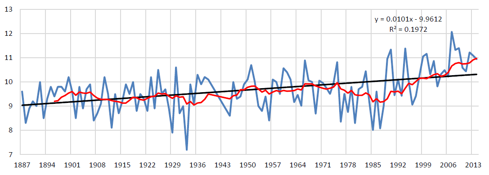
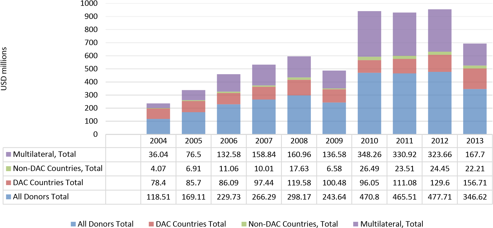

The Republic of Moldova is fully committed to the UNFCCC negotiation process towards adopting at COP21 a protocol, another legal instrument or an agreed outcome with legal force under the Convention, applicable to all Parties, in line with keeping global warming below 2°C.
The Republic of Moldova hereby communicates its Intended Nationally Determined Contribution (INDC) and the accompanying information to facilitate clarity, transparency, and understanding, with reference to decisions 1/CP.19 and 1/CP.20.
Regarding the invitation to consider undertakings in adaptation planning, the Republic of Moldova has included in Annex 1 to INDC the information on adaptation contained in its draft Fourth National Communication currently under preparation, as well as in the Republic of Moldova‘s Climate Change Adaptation Strategy covering the period up to 2020 and the Action Plan on its implementation, approved recently by Governmental Decision No. 1009 as of 10.12.2014.
The Republic of Moldova intends to achieve an economy-wide unconditional target of reducing its greenhouse gas emissions by 64-67 per cent below its 1990 level in 2030 and to make best efforts to reduce its emissions by 67 per cent.
The reduction commitment expressed above could be increased up to 78 per cent below 1990 level conditional to, a global agreement addressing important topics including low-cost financial resources, technology transfer, and technical cooperation, accessible to all at a scale commensurate to the challenge of global climate change.
In line with Lima Call for Climate Action, in particular its paragraph 14, the following quantifiable information is hereby submitted:
| Intended National Determined Contribution | |
|---|---|
| Quantifiable information on the reference period | Base Year: 1990. Total Emissions in Base Year: 43.4 Mt CO2 eq (without LULUCF) and 37.5 Mt CO2 eq (with LULUCF). These data are provisional and will be defined on biennial basis through inventory submissions. |
| Timeframes and periods of implementation | Time frame of the commitment is from 1st January 2021 to 31st December 2030. Its achievement will be tracked periodically through the Republic of Moldova’s Inventory of Greenhouse Gas Emissions and Sinks. |
| Type of contribution | Absolute reduction from base year emissions. |
| Coverage of contribution | Economy-wide absolute reduction from the base year emissions. The geographic coverage is the same as the country’s geopolitical boundary (including the administrative territorial units on the left bank of Dniester river). Republic of Moldova intends to account for 100 percent of national greenhouse gas emissions and removals for the base year as published in the Republic of Moldova’s Greenhouse Gas Emissions and Sinks, on a net-net basis. |
| Scope: inclusion of gases and sectors | Gases Covered: all greenhouse gases not controlled by the Montreal Protocol
Sectors covered: energy; industrial processes and product use; agriculture; land use, land-use change and forestry; and waste. |
| Reduction level | The Republic of Moldova is committed to an unconditional target of a 64-67 per cent reduction of its greenhouse gas emissions by 2030 compared to 1990 levels. The 64 per cent reduction corresponds to a self-sufficiency power system development scenario, while the 67 per cent reduction allows for a 30 per cent import of electricity. The reduction commitment could increase up to 78 per cent reduction below 1990 level conditional to a global agreement addressing important topics, including access to low-cost financial resources, technology transfer and technical cooperation commensurate to the challenge of global climate change. |
| Planning processes | Relevant legislative acts for the INDC implementation are required and will be considered being approved on Parliamentary level. By mid-2016, a draft Low Emission Development Strategy (LEDS) of the Republic of Moldova for the period up to 2030 will be developed. After consultations at the national level, the Low Emission Development Strategy of the Republic of Moldova until 2030 will be subject to approval by the Government by end of 2016. The LEDS is expected to be fully in line with the provisions of the European Union and the Republic of Moldova Association Agreement signed on 27th of June 2014 and any other relevant national legislation. |
| Intended National Determined Contribution | |
|---|---|
| Fair and ambitious | The Republic of Moldova’s approach to considering fairness and ambition is to assess how its INDC contributes to meeting the ultimate objective of the Convention, of achieving stabilization of greenhouse gas concentrations in the atmosphere at a level that would prevent dangerous anthropogenic interference with the climate system. National commitments are well in line with the emissions pathways towards 2050 that correspond to keeping global warming below 2°C compared to preindustrial levels. It is worthwhile to note that fairness considerations in the national perspectives include various aspects and no single indicator on its own can accurately reflect fairness or a globally equitable distribution of countries’ efforts. It is further important to note that the evolving nature of a country’s circumstances is to be reflected in the fairness consideration:
|
| Key assumptions and methodological approaches | Metrics applied: The Republic of Moldova intends to use 100-year Global Warming Potential (GWP) values to calculate CO2 equivalent totals. The Republic of Moldova intends to report emission totals using the Fourth Assessment Report values, and will consider future updates to GWP values from IPCC. Methodologies for estimating emissions: IPCC Guidelines 2006. Approach to accounting for agriculture, forestry and other land use: the Republic of Moldova intends to include all categories of emissions by sources and removals by sinks, and all pools and gases, as reported in the National Inventory of Greenhouse Gas Emissions and Sinks; to account for the land sector using a net-net approach; and to use a “production approach” to account for harvested wood products which is consistent with IPCC guidance. The Republic of Moldova may also exclude emissions from natural disturbances, as consistent with available IPCC guidance. There are material data collection and methodological challenges to estimate emissions and removals in the land sector. In compliance with IPCC Good Practice, the Republic of Moldova will continue to improve its land sector greenhouse gas reporting, which will involve the update of its methodologies. Contribution of international mechanisms: The Republic of Moldova may use bilateral, regional and international market mechanisms to achieve its conditional 2030 target, subject to robust systems that deliver real and verified emissions reductions. The unconditional INDC commitment will be met through domestic actions, although these would assist cost-effective implementation. In order to avoid GHG emissions’ double counting, an appropriate robust national MRV system will be put in place in the period of 2016-2017. It will cover the GHG emissions accounting from international bunkers and CDM projects as well, delivering real and verified emission reductions. |
The Republic of Moldova’s share in global greenhouse gas emissions is less than 0.03 per cent. In
2013, total and net greenhouse gas emissions of the Republic of Moldova equalled 12.8 Mt CO2 eq (with LULUCF) and 12.7 Mt CO2 eq (without LULUCF) (see table 1) and total and net per capita emissions were less than half of the world average (3.2 tCO2 eq/capita vs 6.4 tCO2 eq/capita, and 3.1 tCO2 eq/capita vs 6.8 tCO2 eq/capita respectively).
Table 1: Greenhouse Gas Emissions and Sinks Trends in the Republic of Moldova within 1990-2013 period, Mt CO2 equivalent
| 1990 | 1995 | 2000 | 2005 | 2010 | 2011 | 2012 | 2013 | |
|---|---|---|---|---|---|---|---|---|
| 1. Energy sector | 34.5213 | 11.7222 | 6.6728 | 8.4684 | 9.6473 | 9.8255 | 9.4690 | 8.4046 |
| 2. Industrial processes | 1.8420 | 0.4784 | 0.2702 | 0.5605 | 0.5594 | 0.6011 | 0.6227 | 0.6726 |
| 3. Solvents | 0.1261 | 0.0346 | 0.0288 | 0.0675 | 0.0612 | 0.0689 | 0.0759 | 0.0666 |
| 4. Agriculture | 5.0639 | 3.2844 | 2.2899 | 2.3588 | 2.1007 | 2.0865 | 1.6400 | 2.1267 |
| 5. LULUCF | -5.8866 | -1.0294 | -1.3922 | -0.3754 | -0.6571 | -0.4296 | -2.4704 | -0.0976 |
| 6. Waste | 1.8655 | 1.9044 | 1.4690 | 1.29780 | 1.5707 | 1.5597 | 1.5567 | 1.5658 |
| Total (without LULUCF) | 43.4188 | 17.4240 | 10.7307 | 12.7530 | 13.9394 | 14.1417 | 13.3642 | 12.8363 |
| Net (with LULUCF) | 37.5322 | 16.3946 | 9.3385 | 12.3776 | 13.2823 | 13.7120 | 10.8939 | 12.7387 |
In 2013, about 65.5 per cent of the total national direct GHG emissions originated from Energy Sector. Other relevant direct GHG sources were represented by Agriculture Sector (16.6 per cent of the total), Waste Sector (12.2 per cent of the total) and Industrial Processes Sector (5.2 per cent of the total). The share of two other sectors (Solvents and Other Product Use and Land Use, LandUse Change and Forestry Sector) was insignificant, less than 1.0 per cent (see figure 1).
Figure 1: Breakdown of the Republic of Moldova’s Total GHG Emissions by Sectors in 2013
In comparison with the 1990 year level, by 2013 the Republic of Moldova's GHG emissions were 70.4 per cent below 1990 levels (see figure 2).
From table 2, it is obvious that this reduction in GHG emissions over the last 24 years is in full consistency with a decrease in some important socio-economic indicators: population number decreased by 6.8 per cent, the GDP – by 32.2 per cent, the GHG intensity (CO2eq/GDP) – by 56.4 per cent, the electricity consumption – by 52.3 per cent, the heat consumption – by 82.4 per cent, while the consumption of primary energy resources decreased by 78.3 per cent.

Figure 2: Greenhouse Gas Emissions and Sinks Trends in the Republic of Moldova within 19902013 period, Mt CO2 equivalent
Table 2: Republic of Moldova’s total GHG Emissions and Associated Variables, 1990-2013
| 1990 | 1995 | 2000 | 2005 | 2010 | 2011 | 2012 | 2013 | |
|---|---|---|---|---|---|---|---|---|
| Population, million inhabitants | 4.3616 | 4.3479 | 4.2815 | 4.1479 | 4.0817 | 4.0738 | 4.069 | 4.0647 |
| Change compared to 1990, % | -0.3 | -1.8 | -4.9 | -6.4 | -6.6 | -6.7 | -6.8 | |
| Inter-annual change, % | -0.1 | -0.3 | -0.3 | -0.2 | -0.2 | -0.1 | -0.1 | |
| Total emissions, Mt CO2 eq | 43.4188 | 17.424 | 10.7307 | 12.753 | 13.9394 | 14.1417 | 13.3642 | 12.8363 |
| Change compared to 1990, % | -59.9 | -75.3 | -70.6 | -67.9 | -67.4 | -69.2 | -70.4 | |
| Inter-annual change, % | -17 | -8.8 | 3.6 | 6.1 | 1.5 | -5.5 | -4 | |
| GHG per capita, tons per person | 10 | 4 | 2.5 | 3.1 | 3.4 | 3.5 | 3.3 | 3.2 |
| Change compared to 1990, % | -59.7 | -74.8 | -69.1 | -65.7 | -65.1 | -67 | -68.3 | |
| Inter-annual change, % | -16.9 | -8.6 | 4 | 6.3 | 1.6 | -5.4 | -3.8 | |
| GDP, billion 2010 $US | 9.8935 | 3.9663 | 3.5229 | 4.9597 | 5.8116 | 6.2068 | 6.1633 | 6.7119 |
| Change compared to 1990, % | -59.9 | -64.4 | -49.9 | -41.3 | -37.3 | -37.7 | -32.2 | |
| Inter-annual change, % | -1.4 | 2.1 | 7.5 | 7.1 | 6.8 | -0.7 | 8.9 | |
| GHG intensity, kg CO2 eq/2010 $US | 4.4 | 4.4 | 3 | 2.6 | 2.4 | 2.3 | 2.2 | 1.9 |
| Change compared to 1990, % | 0.1 | -30.6 | -41.4 | -45.3 | -48.1 | -50.6 | -56.4 | |
| Inter-annual change, % | -15.8 | -10.7 | -3.6 | -0.9 | -5 | -4.8 | -11.8 | |
| Energy imported, million tce | 16.703 | 5.109 | 2.535 | 3.123 | 2.96 | 3.075 | 2.918 | 2.977 |
| Change compared to 1990, % | -69.4 | -84.8 | -81.3 | -82.3 | -81.6 | -82.5 | -82.2 | |
| Inter-annual change, % | 11 | -18 | 4.2 | 5 | 3.9 | -5.1 | 2 | |
| Energy consumed, million tce | 14.269 | 5.085 | 2.647 | 3.257 | 3.157 | 3.201 | 3.068 | 3.091 |
| Change compared to 1990, % | -64.4 | -81.4 | -77.2 | -77.9 | -77.6 | -78.5 | -78.3 | |
| Inter-annual change, % | 9.7 | -20.2 | 6.3 | 6.7 | 1.4 | -4.2 | 0.7 | |
| Electricity produced, billion kWh | 15.69 | 6.168 | 3.624 | 4.225 | 6.115 | 5.785 | 5.802 | 4.491 |
| Change compared to 1990, % | -60.7 | -76.9 | -73.1 | -61 | -63.1 | -63 | -71.4 | |
| Inter-annual change, % | -25.8 | -11.8 | 1.1 | -1.3 | -5.4 | 0.3 | -22.6 | |
| Electricity consumed, billion kWh | 11.426 | 7.022 | 4.51 | 5.838 | 5.257 | 5.416 | 5.604 | 5.449 |
| Change compared to 1990, % | -38.5 | -60.5 | -48.9 | -54 | -52.6 | -51 | -52.3 | |
| Inter-annual change, % | -3.9 | -4.4 | -3.1 | -0.9 | 3 | 3.5 | -2.8 | |
| Heat produced, million Gcal | 22.212 | 7.278 | 3.846 | 4.83 | 4.487 | 4.376 | 4.239 | 4.307 |
| Change compared to 1990, % | -65.3 | -81.7 | -77 | -78.6 | -79.1 | -79.8 | -79.5 | |
| Inter-annual change, % | -3.1 | -31.9 | 11.1 | 10.1 | -2.5 | -3.1 | 1.6 | |
| Heat consumed, million Gcal | 20.983 | 6.283 | 3.358 | 4.16 | 3.798 | 3.764 | 3.6 | 3.694 |
| Change compared to 1990, % | -70.1 | -84 | -80.2 | -81.9 | -82.1 | -82.8 | -82.4 | |
| Inter-annual change, % | -5.6 | -29.6 | 11.6 | 9.4 | -0.9 | -4.4 | 2.6 |
The significant reduction in the level of socio-economic indicators over the 1990-2013 periods is a consequence of the deep transformation processes common during transition from a centralized economy to a market economy, specifically after the breakup of the Soviet Union and the declaration of the Republic of Moldova’s independence on 27th of August 1991.
The country rated among the low-medium income countries in 1990, and it is at present one of the lowest income nations in Europe. Certain economic decline patterns had been registered prior to 1991, but the separation from the USSR has considerably accelerated the process.
The GDP level was decreasing continuously during the period from 1990 to 1999 inclusively, when it fell down to as little as 34 per cent of the 1990 level. The reasons for the economic collapse were numerous. First, the country had been fully integrated in the USSR economic system, and the independence resulted, among other things, in the cessation of any subsidies or cash transfers from the centralized government. Second, the end of the Soviet Era with its well established commercial links has resulted in the emergence of numerous obstacles for free movement of goods, and in access restrictions introduced by the emerging markets. Third, the lack of domestic energy resources and raw materials in the country has contributed considerably to the nation’s strong dependence on other former Soviet Republics.
This dependence has affected consumers’ capacity to pay for the energy used due to the increased prices of energy resources (ex., from 1997 to 2014 the natural gas tariff increased 13.0 times; electricity tariff increased 6.6 times; gasoline, diesel and liquefied gases prices increased 1.9 times), in the condition when about 95% of energy resources were imported. On the other hand, without applying cross subsidizations policies, the current energy prices have incentivized the population to take strong energy efficiency measures in the Republic of Moldova, which led to a significant decrease of the energy intensity, declining since 2006 with an average annual negative growth of 11.3 per cent.
At the same time, within 2000-2013 period, the real GDP increased by 90.5 per cent, from 3.5229 to 6.7119 billion 2010 US$, while the real GDP per capita increased by 120.0 per cent, from 842.8 to 1,854.1 2010 US$. The considerable real GDP growth achieved since 2000 seems to indicate that the economy is finally developing in the correct direction, although it should be remembered that in 2013 the real GDP reached only 68 per cent of the 1990 year level. It is worth mentioning that from 2000 to 2013, the electricity consumption increased in the Republic of Moldova by 20.8 per cent; the heat consumption – by 10.0 per cent, the consumption of primary energy resources – by 16.8 per cent; while the GHG intensity (CO2eq/GDP) decreased during the same period by 37.2 per cent, showing the first signs of the decoupling of economic growth from the growth in greenhouse gas emissions, by 19.6 per cent within 2000-2013 periods (see figure 3).

Figure 3: Trends in total GHG emissions and associated variables in the Republic of Moldova within 2000-2013 period
Pre-2020 Mitigation Policy Framework
In 2010, the Republic of Moldova joined the Copenhagen Accord and submitted an emission reduction target to the UNFCCC Secretariat, which is specified in Annex II to this Agreement “Nationally Appropriate Mitigation Actions of the Developing Countries”. The target of the appropriate mitigation actions of the Republic of Moldova envisaged in this Agreement represents:
“A reduction of no less than 25% of the 1990 level total national GHG emissions has to be achieved by 2020 through implementation of global economic mechanisms focused on the climate change mitigation, in accordance with the Convention’s principles and provisions.”
This target was provided without specific nationally appropriate mitigation actions, identified and quantified, or further clarification on the support needed. However, it was recognized that, to achieve this target, significant financial, technological and capacity building support will be needed, which can be provided by UNFCCC mechanisms.
The Environmental Protection Strategy for the years 2014-2023 and the Action Plan for its implementation was recently approved through the Governmental Decision No. 301 as of 24.04.20144. According to this policy document, a 20 per cent GHG emissions reduction compared to the BAU scenario has to be reached in the Republic of Moldova by 2020.
Along with the overall national target, the policy document sets up GHG emissions reduction targets for seven economic sectors:
The desired reduction of GHG emissions by 2020 of 20 per cent below the BAU scenario level requires decisive actions at the national and sector levels. For instance, considerable abatement contributions are expected to be achieved within the energy sector (533 ktep savings are envisaged from energy efficiency measures and 430 ktep savings from RES implementation covering the energy demand – the policy instruments in place envisage increasing the share of RES in the country’s energy balance up to 20 percent by 2020, and covering up to 10 percent of the electricity demand with locally produced renewable energy by 2020).
Post-2020 Mitigation Policies Framework
Relevant legislative acts for the INDC’s commitments implementation within 2021-2030 periods are required and will be considered being approved on Parliamentary level.
By mid-2016, a draft Low Emission Development Strategy (LEDS) of the Republic of Moldova for the period up to 2030 will be developed. After consultations at the national level, the Low Emission Development Strategy of the Republic of Moldova until 2030 will be subject to approval by the Government by end of 2016.
Thus, the Republic of Moldova stays committed to and striving for an ambitious international agreement on climate change in line with recommendations by science to maintain average global temperature increase below two degrees Celsius.
The Republic of Moldova urges all other Parties, in particular major economies, to communicate their INDCs in a manner that facilitates their clarity, transparency and understanding.
The Republic of Moldova requests the UNFCCC Secretariat to publish its INDC on its website and to take it into account when preparing the synthesis report on the aggregate effect of the INDCs communicated by Parties.
The Republic of Moldova looks forward to discussing with other Parties the fairness and ambition of the INDCs in the context of the below 2°C objective, their aggregate contribution to that objective and ways to collectively further increase this ambition.
The Republic of Moldova is a highly vulnerable country to the adverse impacts of climate change. Over the last 127 years, the Republic of Moldova has experienced changes in temperature and mean precipitation. The country has become warmer, with the average temperature increase greater than 1.0°C.

Figure 4: Trends of annual average air temperature change (°C) for 1887-2014: blue (actual course trend), black solid line (linear trend secular course) and red line (10 year moving average trend) at the meteorological station Chisinau, central part of the country
At the same time, the Republic of Moldova has experienced an increased number of extreme weather events, such as droughts and floods. An analysis of national climate data revealed that the frequency of droughts in the Republic of Moldova in a 10-year time span is 1-2 droughts in the Northern part of the country; 2-3 droughts in the Central part and 5-6 droughts in the South. Their frequency is increasing, especially over the last decades. During the 1990-2014 timespan, 10 years were marked by droughts, which reduced significantly the crop yields. In 1990, 1992 and 2003, droughts continued during the entire vegetation period (April-September). The disastrous droughts of 2007 and 2012 affected over 70 per cent of the territory of the country, being the most severe droughts in the entire instrumental record period.

Figure 5: Trends of annual average precipitation (mm) for 1891-2014: blue (actual course trend), black solid line (linear trend secular course) and red line (10 year moving average trend) at the meteorological station Chisinau, central part of the country.
Floods also affect the Republic of Moldova on a recurring basis. In the past 70 years, 10 major floods on the great rivers of the Republic of Moldova (Dniester and Prut) were reported, and three of those occurred already in XXI century (2006, 2008 and 2010). Large floods on the smaller rivers of the country are also quite common.
The socio-economic costs of climate change related to natural disasters such as droughts and floods are significant. Both their intensity and frequency are expected to further increase as a result of climate change. During 1984-2006, the Republic of Moldova’s average annual economic losses due to natural disasters were about US$61 million.
The 2007 and 2012 droughts alone caused losses estimated at about US$ 1.0 and 0.4 billion, respectively. The 2008 floods cost the country about US$120 million, and the total damage and losses produced by 2010 floods were estimated at approximately US$42 million.
The patterns of future temperature and precipitation conditions were computed for the Republic of Moldova from the global climate model output gathered as part of the Coupled Model Intercomparison Project Phase 5 (CMIP5).
Twenty one global coupled atmosphere ocean general circulation models (GCMs) were implied in this exercise under the Forth National Communication Project, the projections being made under the Representative Concentration Pathway (RCP) scenarios RCP 2.6, RCP 4.5, and RCP 8.5 available in the IPCC AR5.
The future climatic changes were assessed over the three Agro-Ecological Zones (AEZs) (North, Centre and South) of the Republic of Moldova for the near term (2016–2035), midterm (2046– 2065) and long term (2081–2100) given relative to the reference period (1986–2005).
It was revealed that for temperature, the ensemble average changes consistently have the same sign across scenarios and their magnitude increase from the low RCP 2.6 radiative forcing pathway to the high RCP 4.5 and RCP 8.5, as moving into the later decades of the 21st century. The CMIP5 projections reveal warming in all seasons for the three AEZs, while precipitation projections are more variable across scenarios, sub-regions and seasons.
Annual changes for temperatures are very homogeneous over the three AEZs. The rate of warming is higher under RCP 8.5 scenario +4.6°C; medium +2.4°C under RCP 4.5; and smaller +1.3°C under the RCP 2.6 scenario by 2100. The ensemble, driven by RCP 8.5 emission scenario, estimates that the three AEZs will experience the most significant warming during summer from +5.9°C in North up to +6.1°C in South by 2100. The pattern of change derived from the ensemble RCP 2.6 models is quite similar, but the magnitude of change is lower from +1.3 to +1.5°C. The warming would be higher during winter up to +4.6°C in North, in the Centre and South temperature rise will be lower up to +4.2°C according to the RCP 8.5 scenario. The RCP 2.6 scenario reveals less intense warming over the three AEZs, from +1.2 to +1.4°C.
The ensemble projections from the RCP 8.5 forcing scenario show that the three AEZs would exhibit a general annual decrease in precipitation varying from 9.9% in North to 13.4% in South. Controversially, according to RCP 2.6 scenario moderate increase in precipitation from 3.1% in North to 5.1% in South by 2100 is projected. Winters were been estimated to be wetter in the Republic of Moldova by the end of the 21st century. The ensemble projections show the largest increase in precipitation from 4.0% (RCP 2.6) to 11.8% (RCP 8.5) in winter over Northern and the lowest one from 3.0% (RCP 2.6) to 7.4% (RCP 8.5) in Central parts of the country by 2100. The precipitation decrease will be more extended in the three AEZs during summer; the greatest rainfall reduction from 13.2% (RCP 4.5) to 25.1% (RCP 8.5) is projected in Centre and the lowest one from 7.4% (RCP 4.5) to 18.1% (RCP 8.5) in the North of the Republic of Moldova.
The Republic of Moldova’s Climate Change Adaptation Strategy until 2020 and the Action Plan on its implementation have been recently approved through the Governmental Decision No. 1009 as of 10.12.20145.
The vision of the Strategy is to develop and apply “a mechanism for adaptation to actual and potential climate change impacts, integrated and implemented across all sectors of the national economy so as to reduce vulnerability and increase resilience to the effects of these changes”.
The goal of the Strategy is ‘to assure that the Republic of Moldova’s social and economic development is less vulnerable to climate change impacts by becoming more resilient’.
The general objective of the Strategy is oriented towards ‘increasing the capacity of the Republic of Moldova to adapt and respond to actual or potential climate change effects’.
The three specific objectives of the Strategy are to:
The Action Plan on implementation of the Republic of Moldova’s Climate Change Adaptation Strategy until 2020 is treated as 1st National Adaptation Plan (NAP). It is envisaged that the progress made in the area of adaptation to climate change will be determined on a periodic basis and in post-2020 period 4-year based NAPs and Sector Adaptation Plans (SAPs) will be developed and implemented. More detailed information on this issue is provided in section ‘A.VI. Monitoring and reporting progress’.
The Republic of Moldova’s Climate Change Adaptation Strategy until 2020 and the Action Plan on its implementation is intended to serve as an umbrella strategy that creates the enabling environment for specific sectors and ministries to “mainstream” climate change adaptation and risk management in their existing and future strategies through a series of NAPs and SAPs, supported by a long-term financial strategy that includes national resources and international support to prevent the adverse effects of climate change and maximize the opportunities provided by them.
Specific Objective 1: Create by 2018 the institutional framework in the field of climate change that would assure the efficient implementation of adaptation measures at the national, sector and local levels
The specific objective 1 is envisaged be achieved through the following courses of action:
Action 1.1: Develop the institutional framework in the field of climate change adaptation
The Government has to create a strong institutional structure and the environment that would enable advocating for climate change adaptation across all sectors and at all levels of implementation with strengthening technical capacities and leadership for implementation of climate change adaptation measures. Institutional framework for climate risk management is needed to sustain the capacity to implement specific measures at sector level, based on a reasonable understanding of the risks. In the initial capacity development stage this is reflected in training and awareness rising among decision-makers and technical staff to develop foundational capacity.
Given the fact that the Ministry of Environment does not have a special structure that would develop and promote an effective climate change policy, the capacity building becomes indispensable to this ministry by creating a division specialized in climate policies. Considering the need to integrate climate change aspects in sectorial development policies, climate change units will also have to be created in the line ministries and these institutions shall be provided adequate financial resources.
Building the capacities of governmental institutions to manage and integrate climate change adaptation in sectoral development policies and sustainable practices to be implemented at national and local levels will be initiated at the beginning of the implementation of the Strategy. A training program will be developed and implemented on building the capacity to integrate climate risks and disasters in sectoral policies and sustainable practices related to climate change adaptation methods, adapted to the needs of local and national levels, and sector-specific issues, accordingly.
Action 1.2: Mainstream climate change adaptation in the sectoral policies of national economy
Responding to the risk posed by climate change will require coordinated and focused efforts of the Government in view of promoting policies and measures at national and sector levels to prevent adverse climate change effects. Central Public Authorities will need to amend the existing and/or develop new sectoral strategies and action plans on climate change adaptation to address climate risks as part of the policies and activities planned at sector level.
Mainstreaming climate change risks and adaptation into the national framework requires several steps to assure that information about climate-related risks, vulnerability, and options for adaptation is incorporated into planning and decision-making in key sectors as well as into existing national assessments and action plans.
Broadly speaking, these steps include: understand climate risks and existing knowledge on climate change adaptation; assess institutional and policy implications of key threats posed by climate change; amend the existing and/or develop new sectoral strategies and action plans that are climate-resilient.
To assure the implementation of these policies, actions on identifying funds for adaptation, creating mechanisms for performance coordination and monitoring will be needed. As this process is not linear, it requires that new information on climate risks and adaptation approaches be continuously integration to minimize the impacts.
The implementation of climate change adaptation measures while assuring the sustainable development and economic growth also requires the improvement of the existing legal framework, the development of efficient financial instruments to implement these measures and a change in the behaviour and attitude to consumption mode and generation method.
Thus, the relevant legislative acts will be reviewed to identify fields that do not enable the existing or potential adaptation activities, the legislation will be amended or new legislative and regulatory acts will be developed to assure that legislative and regulatory frameworks facilitate climate change adaptation at all levels, including autonomous adaptation of individuals, communities and private sector.
Action 1.3: Develop the communication and the institutional cooperation in view of implementing adaptation policies
In the spirit of joint action stemming from the general objective, public authorities will establish clear objectives and jointly achieve them, to protect the Republic of Moldova against the negative effects of climate change. They will propose measures and solutions and will implement actions under the leadership, guidance and coordination of the Ministry of Environment, in accordance with the national priorities and the European Climate Change Adaptation Policy and the obligations of the country under the Republic of Moldova-EU Association Agreement (AA) to implement these policies. Following the courses of action set out, decision makers and those who assure its implementation in all priority sectors should cooperate effectively to assure a secure future.
Since governmental institutions cannot assume themselves the responsibility to implement of climate change adaptation measures, the whole society should be ready to respond to requests by going through a transition process of changing attitudes and actions, from a reactive to a proactive approach to a climate change mitigation policy, fully accepted, adopted, implemented, and continuously updated by the Government. Public authorities need to focus on the cooperation with the business community, NGOs and academic/scientific community and combine the expertise and resources to raise the willingness to act. Public authorities need to assure the creation, sharing and dissemination of knowledge, as well as the exchange of best practices in all priority sectors. The development of public-private partnership will encourage for increasing the effectiveness of the approach specific to a field. Regional and international cooperation will be also developed, and as long as the provision of financial resources is limited, collaborative relationships with donor financial institutions will be developed.
The main instrument for strengthening the cross-sector coordination will be Communication Strategy on Climate Change Adaptation, which will establish an effective mechanism to disseminate, among relevant ministries, the information on implementation of climate change adaptation strategies, and as a feedback link inclusive, to have a two-way information flow.
Specific Objective 2: Create by 2020 a mechanism for monitoring the climate change impact, related social and economic vulnerability, and managing/disseminating the information on climate risks and disasters
The specific objective 2 will be implemented in three courses of action:
Action 2.1: Continuous monitoring and research of climate change impacts, related social and economic vulnerability, and periodic updating of climate scenarios
Continuous monitoring of climate change impacts at the national level allows for identifying the most likely evolution in this field, and providing opportunities for immediate action and decisions at the administrative level. As accurate as possible knowledge on potential climate change effects on economic and social sectors is needed to adopt effective climate change adaptation measures. Research activities need to be implemented on the following priorities:
Action 2.2: Create a climate change database
The Ministry of Environment will coordinate the creation of a national climate change database, acting in this regard jointly with the research institutions, academia, universities and NGOs. This database will contain full information on the evolution of climatic factors such as temperature, rainfall regimen, etc., including their variability, and the occurrence of extreme hydrometeorological events. To create such a database, all available information will be collected and areas where knowledge and data are missing will be identified. The database will be completed and organized in a systematic manner so as to be easily accessible to stakeholders. The database will be expanded at the local level, as authorities at this level are the ones who often implement measures, which are not part of the central governmental structures’ duties. A model of creating this database is the Clearinghouse Mechanism, developed at European level, which will be a tool for collecting and disseminating climate change information, data and case studies, and will also help to increase the coordination between the relevant sectoral policies.
Capacity building and strengthening of the national system of statistics collection/monitoring, reporting, to assure adequate management of electronic databases for periodic hydrometeorological and climate information and other data needed to assess climate risks and impacts, will be considered some of the important elements for assuring the implementation of the national climate change adaptation policy.
Action 2.3: Raise the awareness of all stakeholders on climate change risks and adaptation measures
To implement climate change adaptation policies, the whole society together with public authorities, companies and NGOs, will assure an appropriate level of knowledge about climate change and its expected effects. The awareness on the need to promote climate change adaptation measures will facilitate the needed shift in attitudes and behaviour, and will improve the overall capacity to mitigate climate change effects. Awareness raising actions will be developed based on the need to change the attitudes and behaviour towards the use of natural resources, environmental protection and especially to climate change and the urgency of climate change adaptation actions.
At the same time, inclusion of climate change adaptation issues in the curricula at all levels and in the professional training process plays a very important role in the development of appropriate attitudes, so that young people and children have access to information on disaster and climate risk, appropriate emergency response and long-term adaptation options.
To achieve this goal, an effective awareness campaign will be conducted on climate change adaptation issue, on the potential and the current risks and threats associated with climate change and on the needed preventive actions. Raising the awareness level, disseminating information and proper training are essential elements in the decentralization of the efforts of identifying and implementing specific adaptation measures. The promotion and implementation of the Strategy on communicating climate change impacts and possible responses to them will be of particular importance in this regard, including a public information and awareness campaign through appropriate mass-media.
An early warning system on natural disasters of climatic origin will be created, by providing access for public to data and information needed to assess the climate risks and impacts, as well as the publication of regular monitoring reports as part of the strategy for communication of climate change impacts. By assuring the appropriate level of awareness and sensitivity, obvious behavioural changes are expected in society and at the community level.
Specific Objective 3: Assure the development of climate resilience by reducing at least by 50% the climate change vulnerability and facilitate climate change adaptation in six priority sectors (agriculture, water resources, forestry, human health, energy and transport) by 2020.
Climate change adaptation process will take place in different sectors and at different levels (national, regional, local) with a customized approach for each sector/location. As climate change has a different impact across the sectors and at different levels, measures on adaptation to climate change effects will also be different but will respect the same parameters. To provide viable sectoral solutions, adaptation will be mainstreamed in planning the development of the given sector and will be achieved by close cooperation between stakeholders. In this regard, adaptation measures will be mainstreamed in the current sectoral policies, or new Strategies and/or Action Plans for risk mitigation and climate change adaptation will be developed.
Thus, for each relevant sector specific measures will be identified and implemented taking into account:
If necessary, the legal framework, regulations and financial instruments will be amended to implement climate change adaptation. Development and implementation of all climate change adaptation measures will be coordinated by the Ministry of Environment and achieved by line ministries.
Action 3.1: Risk Management and Climate Change Adaptation in the Agriculture Sector
1) At the national level it will be necessary to:
2) At the local/farm level, the following measures are important:
3) Other relevant measures will consist in:
Action 3.2: Risk Management and Climate Change Adaptation in the Water Resources Sector
1) To protect water resources of the country against climate change, there is a need to conduct studies that will serve as a basis for climate change adaptation:
2) To assure the availability of water at source in the country taking into account the current and future climate change, the following measures need to be undertaken:
3) Other potential adaptation actions in water use will be directed to:
4) Measures to be taken at river basin level to assure climate change adaptation:
5) Measures to be taken for flood risk management:
6) Measures to be taken to combat drought/water scarcity:
Action 3.3: Risk Management and Climate Change Adaptation in the Health Sector
Actions for improving climate change adaptation in the Health Sector could include:
Action 3.4: Risk Management and Climate Change Adaptation in the Forestry Sector
The following climate change adaptation measures could be implemented in the Forestry Sector:
Action 3.5: Risk Management and Climate Change Adaptation in the Energy Sector
Climate change adaptation measures to reduce losses/risks in the Energy Sector are as follows:
1) Energy supply:
2) Energy demand: invest in high‐efficiency infrastructure and equipment; invest in decentralized power generation such as rooftop photovoltaic generators; efficient use of energy through good operating practices.
3) Energy transmission and distribution: improve robustness of pipelines and other transmission and distribution infrastructure; burying or cable re‐rating of the power grid; emergency planning; and regular inspection of vulnerable infrastructure such as wooden utility poles.
Action 3.6: Risk Management and Climate Change Adaptation in the Transport Sector The adaptation measures to reduce losses/risks in Transport Sector are outlined as following:
1) In case of significant variations of temperatures, including heat waves:
2) In case of increases in extreme precipitation events:
National research on climate change has to be linked to international research efforts and has to apply the knowledge gained at this level. Experienced research institutes will be encouraged to participate in supporting the development of the national climate change policy. Since most research institutes conduct studies only on a contractual basis, adequate financial resources are crucial for conducting climate change research, and collaborative relationships will be developed with international financial institutions as long as financial resources remain limited for a long time. A major emphasis will be placed on building the capacities of Working Group members for climate modelling to develop climate models and perform impact assessment studies, for example, by facilitating the exchange of experience and research visits to international climate modelling centres.
It is equally important to monitor the climate change impact and conduct research in priority sectors such as: Agriculture, Health, Forestry, Energy, Transport, Water Resources etc.
Agriculture Sector
Health Sector
>
Water Resources Sector
Forestry Sector
Energy Sector
Transport Sector
The promoted studies on climate change and on the vulnerability to its effects enable better knowledge about sectors, ecosystems and regions that are particularly exposed to climate change, facilitating the identification and promotion of vigorous and effective actions for mitigating the adverse effects of climate change in the country. The findings of these studies will substantiate the adoption of planned adaptation measures and will help to increase the domestic adaptation capacity in line with the achievement of objectives and national sustainable development and environmental protection priorities.
The implementation of climate change adaptation objectives needs to be supported by appropriate financial mechanisms. The implementation cost of the Republic of Moldova’s Climate Change Adaptation Strategy until 2020 and the Action Plan on its implementation is estimated at about US$ 200 million.
The cost of inaction could be devastating, given the fact that natural disasters alone cause the country an average loss of about US$ 61 million each year. The estimates of future costs and benefits suggest that every euro spent on flood protection would avoid six euros of cost generated by damage.
The provision and allocation of adequate financial resources are prerequisites for achieving a successful outcome of the climate change adaptation process. To support climate change adaptation initiatives, both domestic financial resources as well as international ones are required. Domestic financing can be secured both from the state budget and from other financial mechanisms (special funds: National Ecological Fund, National Fund for Regional Development, etc.). They will be important tools for directing the domestic monetary flows in environmental investments, and a means of strengthening the external and domestic financing). Foreign assistance and investments is envisaged to play the most important role in promoting climate change actions in all economic sectors and in catalysing the specific investments that will be needed to assure climate change adaptation in the Republic of Moldova. These investments are linked to a wide range of technologies intended to improve the energy efficiency, use of renewable energy, develop the related road and building infrastructure, and finally adapt to climate change. In this context, the international financial support is needed to implement in full extent the appropriate national and sectorial policies and strategies, or to resolve specific issues in the fields where the climate change impact is significant. Implementation of small and mediumscale pilot and demonstration projects will involve sustainability of external assistance to be received, including through financial mechanisms available under the UNFCCC.
It is anticipated, that the Strategy’s objectives will be achieved to a greater extent under the conditions in which the Republic of Moldova gains access to the financial mechanisms of the UNFCCC, specifically to the Green Climate Fund, Special Climate Change Fund, Adaptation Fund and others, in view of implementing adaptation projects in the most vulnerable sectors of the national economy.
According to the Organization for Economic Co-operation and Development (OECD) on-line database (see figure 6), Moldova ranks among the top ten countries of Europe that benefit from external assistance. Also, it was the sixth country in Europe by development cooperation received, with a 5 per cent average of all the assistance provided to the region for 2011-2013.6

Source: <http://stats.oecd.org/qwids/>. Abbreviation used: DAC countries – OECD Development Assistance Committee countries (29 in total).
Figure 6: Bilateral, Multilateral and Private Donors’ aid and other resource flows to the Republic of Moldova according to the International Development Statistics (IDS) online databases
Republic of Moldova’s biggest donor since 2007 is the European Union, which started to provide aid to the Republic of Moldova through the European Neighborhood and Partnership Instrument (ENPI), created especially for the countries covered by the European Neighborhood Policies (ENP).
In terms of bilateral aid, the Republic of Moldova’s “big league” partners are: USA, Sweden,Austria, Switzerland and Germany, which add to the plethora of smaller (in terms of granted ODA – Official Development Assistance) Eastern European donors – Romania, Poland, Czech Republic, Hungary, Slovakia, Bulgaria, Estonia, Hungary, Latvia, Lithuania, Slovenia, and Turkey. Top Ten Donors of Gross ODA for the Republic of Moldova is presented in figure 7.

Source: <https://public.tableau.com/views/AidAtAGlance_Recipients/Recipients?:embed=n&:showTabs=y&:display_count=no?&:showVizHome=no#1>.
Figure 7: Top Ten Donors of Gross ODA for Moldova, 2012-2013 average, USD million
In September 2009, the Government of the Republic of Moldova addressed to the donor community with the request for support in implementing the priority reforms for the country’s economic growth, specified in the “We are relaunching Moldova” paper. As a result, during the reunion of the Advisory Group “Partnership for Moldova Forum,” held in Brussels on 24 March 2010, the donors community committed to allocate to Moldova 1.84 billion euros (0.96 billion in the form of grant, 52% of the total; respectively, 0.88 billion in the form of credits, 48% of the total) for the 2011-2013 period. As a whole, the USA (through the Compact Program of the Millennium Challenge Corporation of the USAID, signed in 2010 in the amount of USD 262 million) has become one of Moldova’s main bilateral development partners. The EU commitment and of the EU member states on future allocations have accounted for 40% of the resources promised during the reunion.
Towards the end of 2012, over 70% of the resources provided in the 2010 Brussels reunion had been contracted, through specific projects started in various national economy sectors. In addition, external funds of about 800 million euros have been attracted. Thus, a total amount of 2.6 billion euros were provided to the Republic of Moldova by the donor community in the 20102012 periods (by 40% more as compared to the financial commitments made during the Brussels reunion).
In 2012 the donor funds were estimated at about 474 million euros. According to the data of the State Chancery of the Republic of Moldova, the budget of the projects contracted in the reporting period account for about 206 million euros and the disbursements reported by the donors – about 465 million euros (about 98% of the estimated amount). For comparison, in 2007 the disbursements amounted to 266 million euros; in 2008 – 298 million euros; in 2009 – 244 million euros; in 2010 – 470 million euros; in 2011 – 451 million euros. For 2013 and 2014 there are provided 322 million and 213 million euros, respectively.
The manner of cooperation between the Republic of Moldova and the development partners has taken various forms: technical assistance, support for implementing various investment or social projects, the support provided to the budget for implementing sector policies or the support provided for supporting the state’s payment balance. The objectives of the cooperation between the Government and its partners are agreed upon and stipulated in the medium-term framework cooperation agreements.
According to the data available for external development assistance, the highest share is held by the assistance with project implementation (75%), followed by sector budget assistance (about 17%), technical assistance, and assistance with maintaining the state payment balance. Given the budgetary constraints and of state debt servicing, the manner of attraction of external resources that is preferred by the Government are grants and/or concessional credits.
The amount of on-going external assistance in 2012, according to the information from the database of the State Chancery, the Republic of Moldova accounted for about 1.1 billion euros in the form of grants and 682.8 million euros in the form of loans. Accordingly, in 2012, the contracted resources were distributed as follows: about 109.4 million euros in the form of grants and 97.1 million euros in loans (EBRD, EIB, WB). The share of active grants in the total amount of external assistance has represented about 62%. For 2012, the grant-credit parity represented 53%, accordingly, 47% of the total amount of external assistance contracted during the year.
By the end of 2012, the Republic of Moldova was implementing 384 projects in various sectors, including 116 projects in governance and civil society, 58 projects in infrastructure and social services, 49 projects in education, 31 projects in agriculture, 29 multi-sectorial projects, 24 projects for private sector development, 19 projects in the environment and 16 projects related to energy generation and supply.
As a total, in 2012, there were launched 98 new projects, with new commitments in the amount of 206.6 million euros in various sectors. For 2013, the estimated amount of external assistance was 314 million euros.
It was quite difficult to estimate the external support allocated to date, specifically for adaptationrelated work, as part of these projects and support received is cross-cutting and/or inter-sectorial, covering both mitigation and adaptation aspects.
On November 6, 2014 EU Commissioner for European Neighborhood Policy and Enlargement Negotiations and Prime-minister of the Republic of Moldova signed the Memorandum of Understanding on the Single Support Framework for EU support to the Republic of Moldova for the period of 2014-2017 together with a financing agreement to support the implementation of the Association Agreement (AA) and the Deep and Comprehensive Free Trade Area (DCFTA) – which the Republic of Moldova signed with the EU on 27 June 2014.
The three priority sectors are:
The financial assistance for the period 2014-2017 amounts to EUR 410 million and EUR 30 million for DCFTA.
The Republic of Moldova’s Climate Change Adaptation Strategy until 2020 will be implemented through an Action Plan. To assure the financial support for the activities planned in the Action Plan, such activities will be included in the sectoral strategies for mid-term expenditures and in the annual work plans of institutions involved in this Strategy implementation.
The responsibility for implementing the Strategy rests with all competent institutions identified in the Action Plan.
The National Commission for implementation of mechanisms and provisions of the UNFCCC and of the Kyoto Protocol will coordinate the implementation and will conduct regular assessment of the level of indicators and progress achievement.
The monitoring of the Strategy implementation will be carried out by the Ministry of Environment of the Republic of Moldova, where a subdivision will be designated for that purpose.
Based on the collected and systematized information, it will prepare annual monitoring reports on implementation of the Strategy and will submit them for consideration and approval to the Government.
The monitoring reports to be developed will include information on the implementation of the indicators set in the Action Plan for each action, and every 3 years or as needed progress evaluation reports will be developed as well to assess the impact of activities carried out during the given time and the level of objectives implementation.
As the Strategy was not designed as a linear, but as an iterative process, therefore it will be updated and reviewed periodically, based on the monitoring and evaluation findings, as well as on the updated climate models, and in accordance with the most recent scientific researches.
Towards the end of the Strategy implementation, a final assessment report, containing information on the level of achievement of objectives and of the expected impact, will be prepared. Based on this report, the next stage of strategic planning of climate change adaptation has to be decided.
Further, the Republic of Moldova will put in place a four year based NAPs and SAPs. The proposed framework for NAPs and SAPs will allow for monitoring and planning along a 3-tier M&E approach.
First tier, macro-level monitoring would allow for tracking the evolution of the national adaptation planning process as a whole.
This would entail the development of a number of process-oriented indicators that would be followed across sectors. Examples of such indicators could include: number of SAPs; overall level of Government funding channelled towards adaptation needs; index of resilience/vulnerability of the Moldovan economy, etc. These indicators would provide an image of the overall dynamism of the adaptation planning process as a whole. As such, they may depend on the aggregation of data from lower-level indicators (e.g., data on adaptation funding by sector). The final indicator on level of resilience would allow for tracking of the impact of the adaptation process as a whole. It would have to be computed from recognized vulnerability indices and legitimate sources of data. The next NAP will be used to develop the ‘Index’, ‘Methodology’ and to gather ‘Baseline Data’.
Second tier, meso-level monitoring would allow for tracking of progress and results at a disaggregated level, either sectoral or geographic (e.g., regional), depending on the choices made during planning phases.
These indicators would depend on the provision of data from regional or sectoral authorities. Such indicators would be the following: the number and type of adaptation measures included in sectoral/regional plans, proportion of sectoral budget dedicated to adaptation measures, number/type of sectoral stakeholders implementing adaptation or resilient measures, degree to which the sector/region’s vulnerability has been reduced.
Similarly to the first tier, the final indicator would be an ‘Index’ for which the ‘Methodology’ would be determined in the early phases of NAP planning. Also, while these indicators remain somewhat process-oriented, it could be possible to adopt more concrete indicators within each sector (e.g., if water availability was a constraint to resilience, the water sector M&E framework could adopt an indicator on “overall water availability”).
Sector-specific indicators would have to be agreed upon during the early phases of NAPs or SAPs planning, and could be renewed, depending on their relevance, at the end of each planning period. However, it would be important to keep a number of indicators similar from one sector to the next, to enable comparisons. The prioritization of adaptation measures will be done by the sectors or stakeholders participating in the development and implementation of NAPs and SAPs.
Each time a SAP or a NAP is proposed, it should contain prioritized measures for that planning period. The process of determining the prioritization and selection of certain adaptation options over others should be transparent, and based on rationalized criteria. Ideally, it would be carried out by a stakeholder group, which can consider different economic, environmental, social, cultural or political spheres and concerns. The M&E system will verify if the planned measures have been implemented accordingly. The Cost Benefit Analysis (CBA), Cost Effectiveness Analysis (CEA), Multi Criteria Decision Analysis (MCDA) and other relevant to case econometric assessment methods and tools will be used.
Third tier, a micro-level structure of reporting would also be defined. This would concern indicators related to specific adaptation actions that are adopted within individual sectoral or national plan. For each action or group of actions, a target and an indicator have to be developed (e.g., number of people trained; hectares of forest protected; kilometres of road upgraded; degree of water use (drop-per-crop) efficiency in the wine sector, etc.). Each of these indicators should be attached to the actions contained in the specific sectoral or regional action plan. As such, they would serve as the basis level of results tracking by stakeholders, and would be reported upon annually at least. They could be modified at each round of successive planning, and be aggregated to feed into the meso- and macro-level reporting frameworks. Responsibility for providing information on these indicators would rest upon those who will also be tasked with the implementation of the adaptation actions.
The milestones for reporting under the national adaptation planning process would be as follows:
As each NAP will be set for four years, this would mean that results could be tracked and aggregated twice per period, allowing for an informed planning process for the next phases. Naturally, the first planning period would also entail a baseline assessment of key indicators, and some time to develop the methodologies and indices.
At the end of a planning cycle, the data would be aggregated into a “NAP Impact Study”, which would synthesize all results achieved during the period and make recommendations for the next period. This study will be submitted for consideration to the Government.
The main responsibility for reporting will be of the sectoral administrations, which would need to undertake annual and biennial reporting for micro- and meso-level indicators. All data would be provided to the coordination mechanism, whose secretariat could synthesize information to develop reports. The Secretariat would also provide sectoral administrations with templates and formats in order to allow for standardized tracking. Also, a database would be created to be administered by the coordination mechanism, being accessible however to all participating administrations, in order to facilitate the flow of information. In addition, micro-level reporting could be undertaken with the participation of local NGOs and associations which would participate in the implementation of targeted adaptation measures. Participation of NGOs at all levels of the M&E framework would allow for increased transparency and for broader ownership and dissemination of results.
As adaptation planning is an iterative process, gradually growing in scope and learning from the monitoring and review of on-going adaptation actions, a description of how adaptation progress will be nationally monitored, reviewed, updated, and reported can be an important element.
CAIT 2.0 WIR’s Climate Data Explorer: http://cait.wri.org/profile/Moldova>↩
United States Department of Agriculture Economic Research Center International Macroeconomic Data Set: <http://www.ers.usda.gov/data-products/internationalmacroeconomic-data-set.aspx>.↩
United States Department of Agriculture Economic Research Center International Macroeconomic Data Set: <http://www.ers.usda.gov/data-products/internationalmacroeconomic-data-set.aspx>.↩
<http://lex.justice.md/index.php?action=view&view=doc&lang=1&id=352740>.↩
http://www.oecd.org/dac/stats/documentupload/5%20Europe%20-%20Development%20Aid%20at%20a%20Glance%202015.pdf>.↩